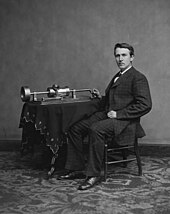

Resumen Rapido
Thomas Alva Edison fue un inventor y hombre de negocios estadounidense. Desarrolló muchos dispositivos en campos como la generación de energía eléctrica,la comunicación de masas, la grabación de sonido y las películas.Estos inventos, que incluyen el fonógrafo,la cámara cinematográfica y las primeras versiones de la bombilla eléctrica,han tenido un impacto generalizado en el mundo industrializado moderno. Fue uno de los primeros inventores en aplicar los principios de la ciencia organizada y el trabajo en equipo al proceso de invención, trabajando con muchos investigadores y empleados.Estableció el primer laboratorio de investigación industrial.

Thomas Edison nació en 1847 en Milan, Ohio,pero creció en Port Huron, Michigan, después de que la familia se mudó allí en 1854.Fue el séptimo y último hijo de Samuel Ogden Edison Jr. (1804–1896, nacido en Marshalltown, Nueva Escocia ) y Nancy Matthews Elliott (1810–1871,nacida en Nueva York). Su línea familiar patrilineal era holandesa a través de Nueva Jersey;el apellido originalmente había sido "Edeson". [Mas informacion]
El fonógrafo fue el primer dispositivo capaz de reproducir sonidos. Fue inventado por Thomas Alva Edison, Eldridge R. Johnson y Émile Berliner en 1876. La primera canción que reprodujo este revolucionario equipo fue María tenía un corderito (Mary had a little lamb), el 1 de noviembre de 1877. [Mas informacion]
Con más de 1000 patentes a su nombre, las innovaciones del legendario inventor ayudaron a definir el mundo moderno. Thomas Edison participó en la invención de dispositivos revolucionarios como la cámara de cine, el micrófono y el fonógrafo. [Mas informacion]